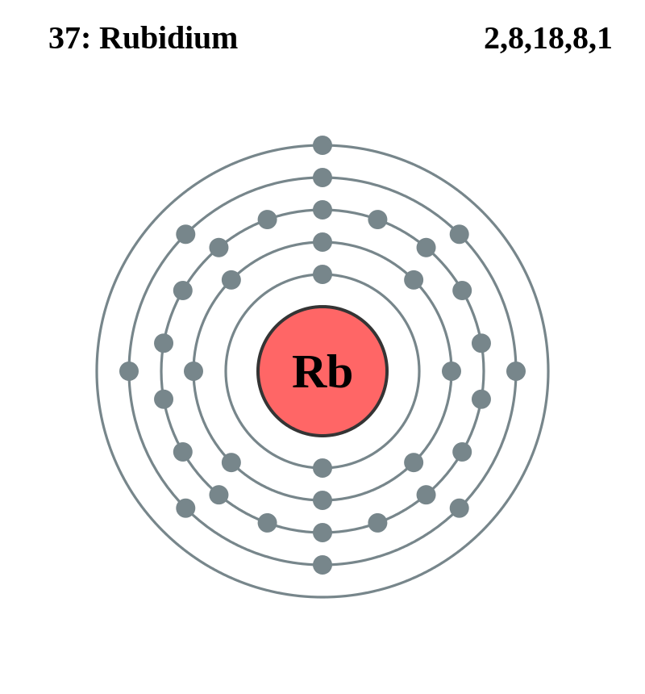

Basic Information about the element
Basic Information about the element
Name: Rubidium
Symbol: Rb
Atomic Number: 37

1s2 2s2 2p6 3s2 3p6 3d10 4s2 4p6 5s1
The chemical element rubidium is classed as an alkali metal.
It was discovered in 1861 by R. Bunsen.
| Number of Protons/Electrons: | 37 |
| Number of Neutrons: | 48 |
| Atomic Mass: | 85.4678 amu |
| Melting Point: | 38.89 °C |
| Boiling Point: | 688.0 °C |
| Classification: | Alkali metal |
| Uses: | Rubidium is used as a catalyst and is also used to develop photocells. |